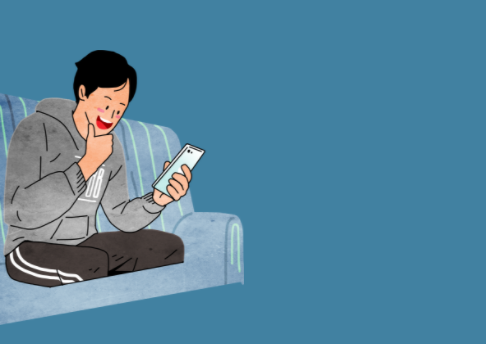
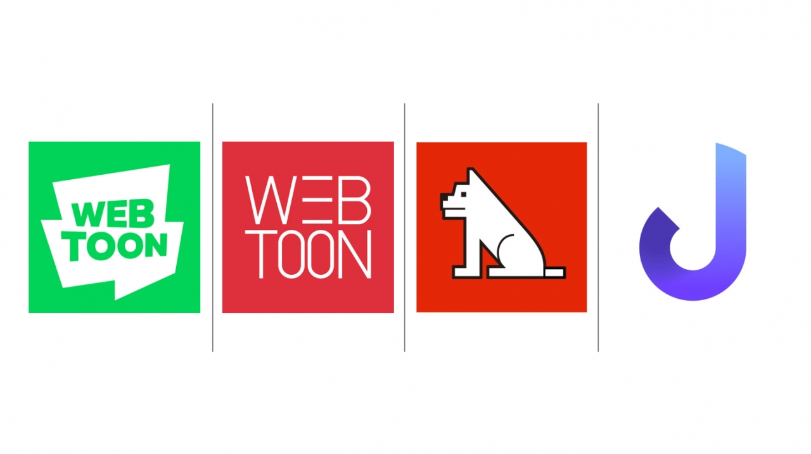
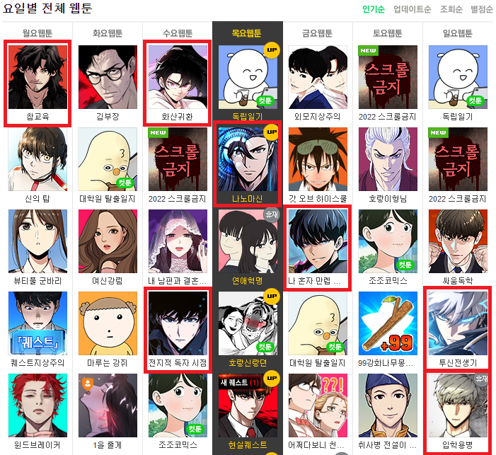

EP1. 우리가 이 데이터에 주목한 이유
(연구 배경 및 목표)
(연구 배경 및 목표)
독자는 요일마다 서로 다른 기분으로 웹툰을 즐기곤 하죠.
과연 이런 마음이 실제 데이터에도 고스란히 나타날까요?
과연 이런 마음이 실제 데이터에도 고스란히 나타날까요?
웹툰 소비 문화
이제 웹툰은 단순한 콘텐츠를 넘어, 일상의 즐거운 여가 문화로 확고히 자리 잡았습니다. 독자들은 그날의 상황이나 기분에 따라 저마다 선호하는 장르를 선택하곤 합니다.

웹툰 소비자
플랫폼 경쟁 환경
플랫폼 간의 콘텐츠 경쟁이 치열해지면서, 사용자의 소비 패턴을 분석하는 것이 무엇보다 중요한 전략이 되었습니다.

유명 웹툰 플랫폼 현황
분석 포인트
- ✔ 요일별로 콘텐츠가 소비되는 흐름을 분석합니다.
- ✔ 시대에 따라 변화하는 장르 트렌드를 파악합니다.
- ✔ 플랫폼 전략 활용 가능성을 탐색합니다.

장르별 웹툰
분석 목표 및 연구 질문
- 연도별로 웹툰 장르 트렌드는 어떻게 달라졌을까요?
- 요일별로 사랑받는 장르에 뚜렷한 차이가 있을까요?
- 이러한 소비 패턴은 플랫폼의 전략과 어떤 연결고리가 있을까요?

데이터 분석